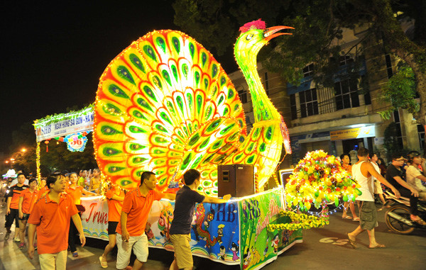

Trang Chủ
Giới Thiệu
Vị trí địa lý
Văn Hóa
Du Lịch
Các loại hình du lịch
Chương trình du lịch
Chính sách du lịch
Lễ Hội
Ảnh
Search
Tuyên Quang là vùng đất giàu bản sắc văn hóa truyền thống của các dân tộc, mỗi dân tộc đều có một nền văn hóa,
nghệ thuật riêng và được thể hiện qua những lễ hội truyền thống với những không gian văn hóa đầy ắp tính nhân văn.
Lễ hội rước Mẫu được tổ chức từ ngày mùng 2 đến ngày 16 tháng Hai (Âm lịch) hàng năm tại đền Mẫu, phường Ỷ La và đền Thượng, xã Tràng Đà để cùng tham gia rước Mẫu về đền Hạ, phường Tân Quang. Lễ hội là sự kế thừa những giá trị văn hóa và tái hiện lại những nghi thức truyền thống trong lễ rước Mẫu của nhân dân xứ Tuyên, thể hiện những nét đẹp văn hóa tâm linh của người dân, giàu ý nghĩa nhân văn, góp phần bảo tồn, phát huy các giá trị văn hóa truyền thống .
Lễ hội Cầu may và Cầu mùa diễn ra vào ngày mùng 2 và mùng 4 tháng Giêng hàng năm tại xã Tân Trào, huyện Sơn Dương. Đây là lễ hội truyền thống của đồng bào dân tộc Tày gắn với di tích lịch sử văn hóa đình Hồng Thái và đình Tân Trào mang ý nghĩa tâm linh và giáo dục truyền thống cách mạng cho nhân dân. Lễ hội đã trở thành hoạt động văn hoá không thể thiếu trong đời sống văn hoá, tinh thần của nhân dân vùng đất chiến khu cách mạng Tân Trào mỗi dịp tết đến xuân về.

Lễ hội Thành Tuyên bắt đầu từ năm 2004, khi đó nhân dân một số tổ dân phố tự nghĩ ra cách làm đèn Trung thu cho trẻ bằng mô hình các con vật ngộ nghĩnh. Việc làm đó thay cho các kiểu đèn ông sao nhỏ truyền thống tạo được cảm hứng chung cho cả tổ dân phố, thay vì đi mua đèn nhỏ cho con em mình, mọi người cùng nhau làm một mô hình chung, rất cầu kỳ và đầy sáng tạo. Sau đó những năm tiếp sau, các mô hình đèn Trung thu ngày càng nở rộ và có sức lan tỏa mạnh mẽ
Lễ hội Lồng Tông (hay còn gọi là Lễ hội xuống đồng) là lễ hội lớn nhất của người Tày diễn ra từ ngày mùng 5 đến ngày 15 tháng Giêng hằng năm trên địa bàn tỉnh, là lễ hội phản ánh mong ước mưa thuận gió hòa, mùa màng tốt tươi. Đây là một trong những lễ hội truyền thống thực sự trở thành nơi bảo tồn, và phát huy bản sắc văn hóa dân tộc,. được xem là một bảo tàng sống và được trao truyền từ thế hệ này sang thế hệ khác.
Năm 2013, Lễ hội Lồng Tông của đồng bào dân tộc Tày tỉnh Tuyên Quang được công nhận là Di sản văn hóa phi vật thể quốc gia.